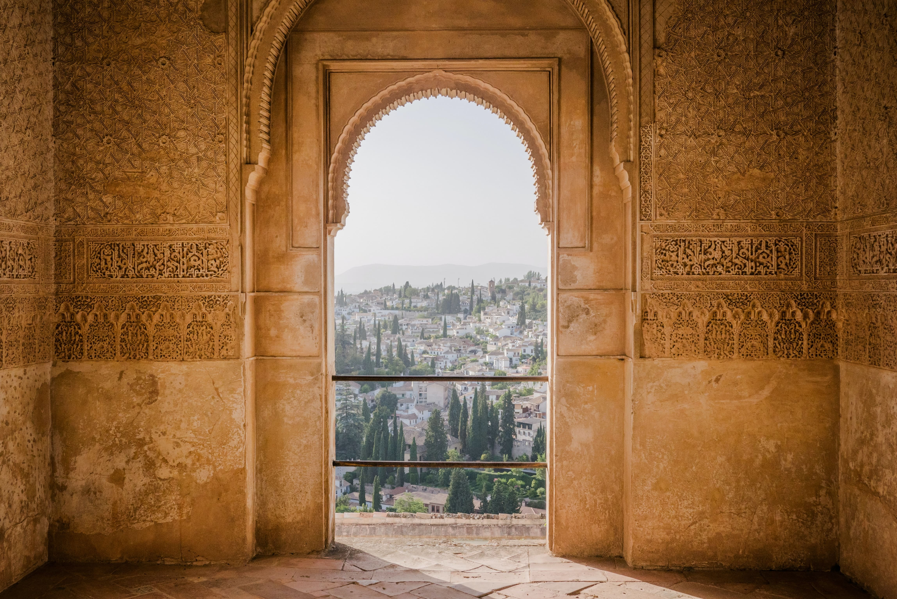
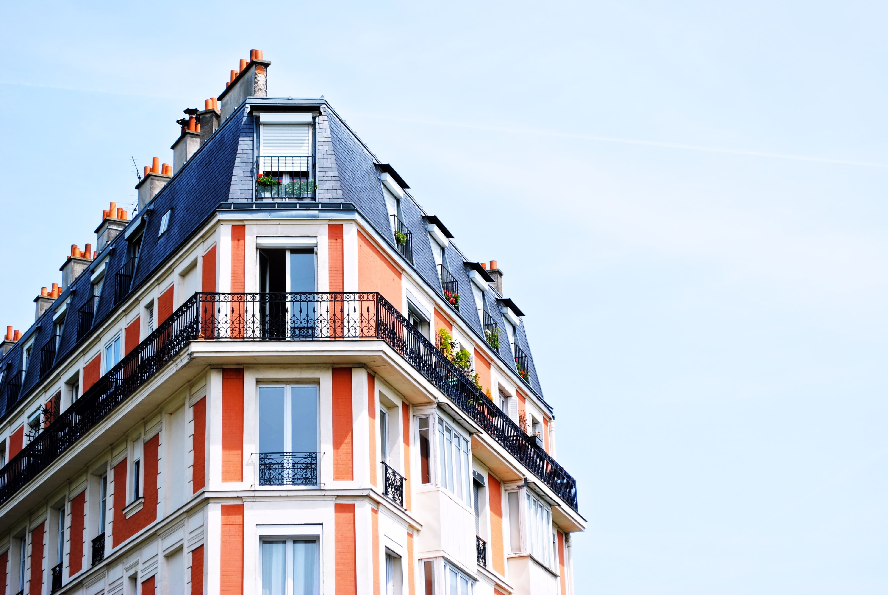
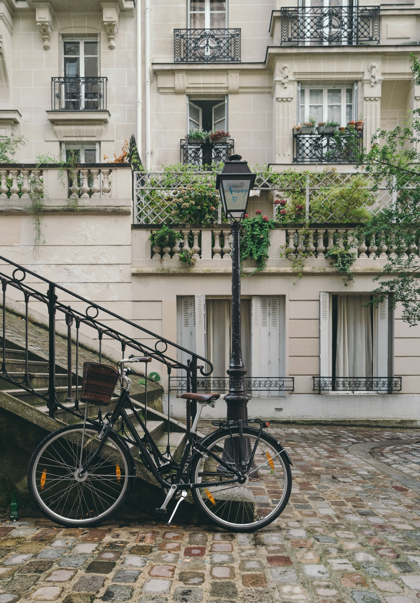
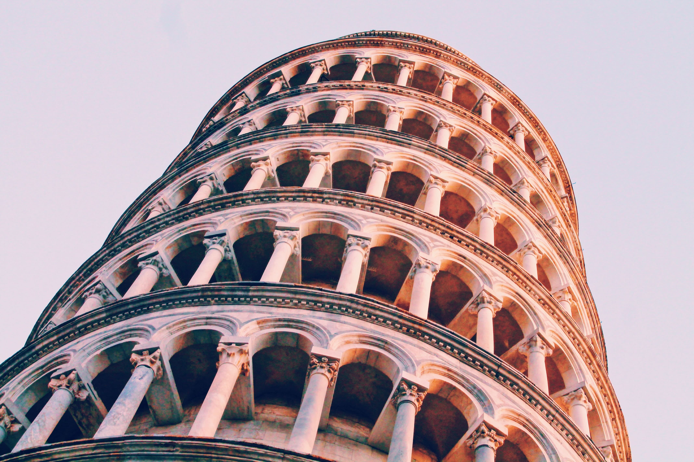
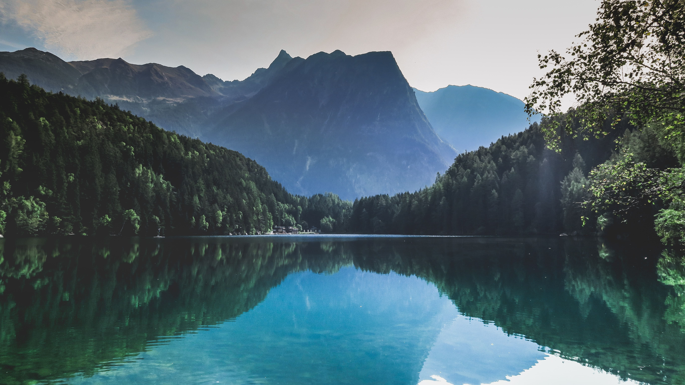
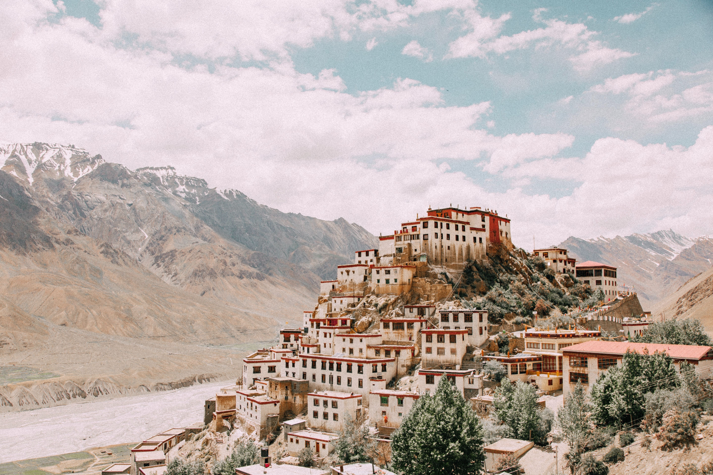
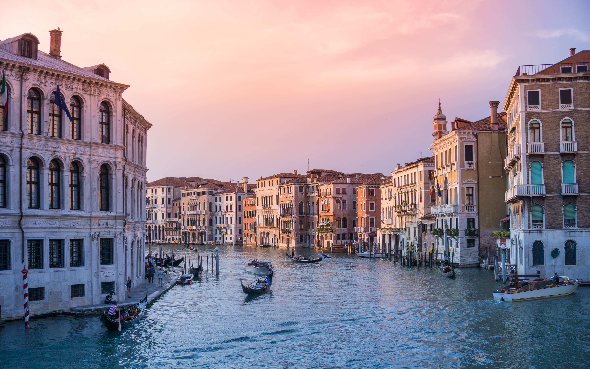
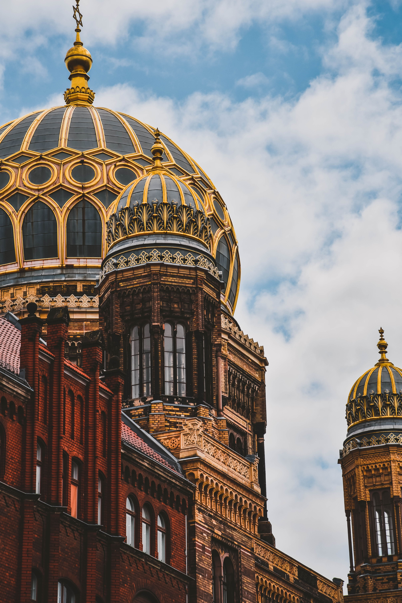

Marcel Nikolic
Berlin, Germany
Toujours à la recherche de LA photo
#architecture
#travel
Contactez-moi
Echantillon des travaux du photographes
Trier par
Trier par
Popularité
Date
Titre

Adventure Door, India

Corner Building and Blue Sky

City Bike and Stair, Paris

Leaning Tower, Pisa

Mountain and Lake

On a Hill, Tibet

Senset on Canals, Venice

Contrast, St Petersburg
Japanese Tower, Kyoto
297081
300€/jour
Contactez-moi Marcel Nikolic
X
Prénom
Nom
Email
Votre message